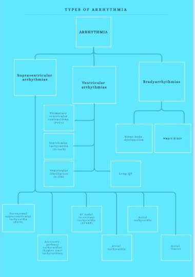

Types Of Arrhythmia

Arrhythmia describes a group of conditions that affect the heart’s natural rhythm. Different types of arrhythmias cause the heart to beat too fast, too slowly, or in an irregular pattern.
Types of arrhythmia
- Supraventricular arrhythmias: Arrhythmias that begin in the atria (the heart’s upper chambers).
"Supra” means above. “Ventricular” refers to the lower chambers of the heart or ventricles.
- Ventricular arrhythmias: Arrhythmias that begin in the ventricles (the heart’s lower chambers).
- Bradyarrhythmias: Slow heart rhythms that may be caused by disease in the heart’s conduction system,
such as the sinoatrial (SA) node, atrioventricular (AV) node or HIS-Purkinje network.
1.What are the types of supraventricular arrhythmias?
Supraventricular arrhythmias begin in the atria or the upper chambers of your heart.
Types of supraventricular arrhythmias include:
- Paroxysmal supraventricular tachycardia (PSVT): A rapid but regular heart rhythm that comes from the atria. This type of arrhythmia begins and ends suddenly.
- Accessory pathway tachycardias (bypass tract tachycardias): A fast heart rhythm caused by an extra, abnormal electrical pathway or connection between the atria and ventricles. The impulses travel through the extra pathways as well as the usual route. This allows the impulses to travel around your heart very quickly, causing it to beat unusually fast (example: Wolff- Parkinson-White syndrome).
- AV nodal re-entrant tachycardia (AVNRT): A fast heart rhythm caused by the presence of more than one pathway through the atrioventricular (AV) node.
- Atrial tachycardia: A rapid heart rhythm that starts in the atria.
- Atrial fibrillation: A very common irregular heart rhythm. This happens when many impulses begin and spread through the atria, competing for a chance to travel through the AV node. This results in a disorganized rapid and irregular rhythm. Because the impulses are traveling through the atria in a disorderly fashion, there’s a loss of coordinated atrial contraction.
- Atrial flutter: An atrial arrhythmia caused by one or more rapid circuits in the atrium. Atrial flutter is usually more organized and regular than atrial fibrillation.
2.What are the types of ventricular arrhythmias?
A ventricular arrhythmia begins in the heart’s ventricles. Types of ventricular arrhythmias include:
- Premature ventricular contractions (PVCs): Early, extra heartbeats that start out in the ventricles. Most of the time, PVCs don’t cause any symptoms or require treatment. This type of arrhythmia is common and can be related to stress, too much caffeine or nicotine, or exercise. They can be also be caused by heart disease or electrolyte imbalance. People who have several PVCs and/or symptoms associated with them should be evaluated by a cardiologist (heart doctor).
- Ventricular tachycardia (V-tach): A rapid heartbeat that begins in the ventricles. The rapid rhythm keeps the heart from adequately filling with blood, and less blood is able to pump through the body. V-tach can be serious, especially in people with heart disease, and may be associated with more symptoms than other types of arrhythmia. A cardiologist should evaluate this condition.
- Ventricular fibrillation (V-fib): An erratic, disorganized firing of impulses from the ventricles. The ventricles quiver and can’t generate an effective contraction, which results in a lack of blood being delivered to your body. This is a medical emergency that must be treated with cardiopulmonary resuscitation (CPR) and defibrillation (delivery of an energy shock to your heart muscle to restore a normal rhythm) as soon as possible.
- Long QT: While this is not an arrhythmia, it can predispose someone to have one. The QT interval is the area on the ECG that represents the time it takes for the heart muscle to contract and then recover, or for the electrical impulse to fire and then recharge. When the QT interval is longer than normal, it increases the risk for “torsade de pointes,” a life-threatening form of ventricular tachycardia.
3.What are the types of bradyarrhythmias?
A bradyarrhythmia is a slow heart rhythm that is usually caused by disease in the heart’s conduction system. Types of bradyarrhythmias include:
- Sinus node dysfunction: Slow heart rhythms due to an abnormal SA node.
- Heart block: A delay or complete block of the electrical impulse as it travels from the sinus node to the ventricles. The level of the block or delay may occur in the AV node or HIS-Purkinje system. The heartbeat may be irregular and slow.
- Premature heartbeats:
Premature heartbeats are extra beats that occur one at a time, sometimes in patterns that alternate with the normal heart beat. The extra beats may come from the top chamber of the heart (premature atrial contractions) or the bottom chamber (premature ventricular contractions).
A premature heartbeat may feel like your heart skipped a beat. These extra beats are generally not concerning, and they seldom mean you have a more serious condition. Still, a premature beat can trigger a longer-lasting arrhythmia, especially in people with heart disease. Occasionally, very frequent premature beats that last for several years may lead to a weak heart.
Premature heartbeats may occur when resting. Sometimes premature heartbeats are caused by stress, strenuous exercise or stimulants, such as caffeine or nicotine.